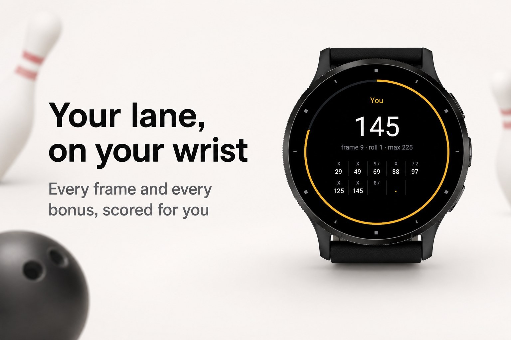
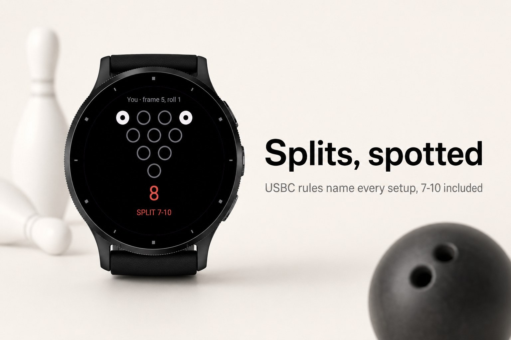
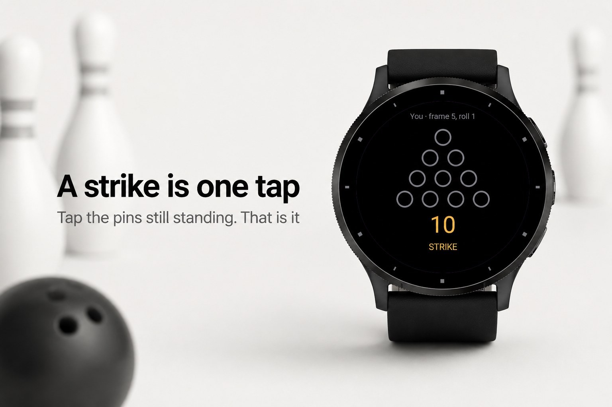
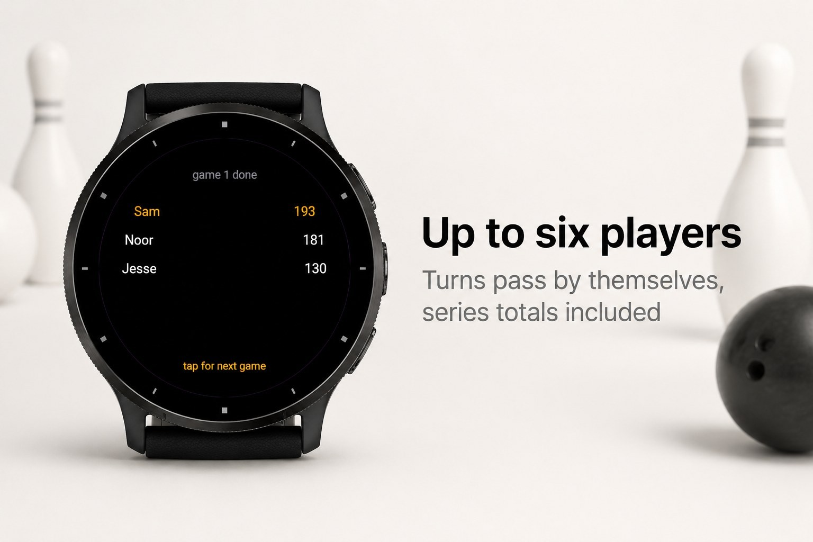
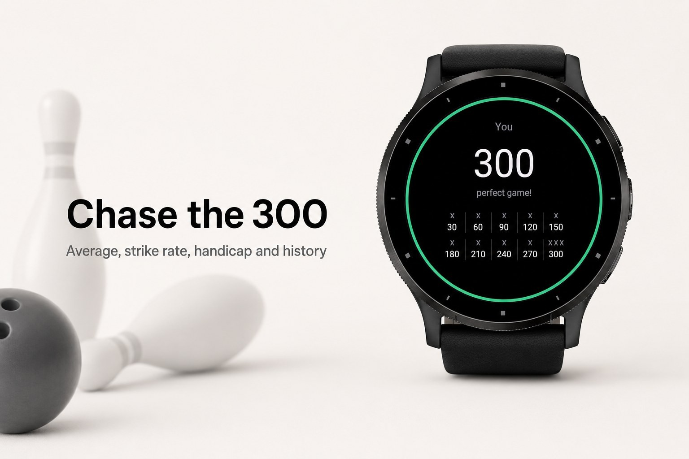

Sport & outdoors · Device app
Bowling scoreboard with splits and six players.





Strike puts the bowling scoreboard on your wrist. After every ball, tap the pins that are
still standing and the app does the rest: strikes, spares, the bonus math, the tricky tenth
frame and a live "maximum possible" so you always know what is still on the table.
It knows more than the house monitor. Splits are detected by the USBC rule and named
(7-10, 4-6-7-10), converted splits are counted, and each game feeds your average, strike
rate and handicap. Bowl alone or with up to six friends; Strike hands the turn to the next
player by itself and keeps a running series total.
frames, split conversion, first-ball average, 200+ games, clean games, longest strike run
Nothing but the watch. Touch watches tap the pins; button watches enter the pin count with
up and down.